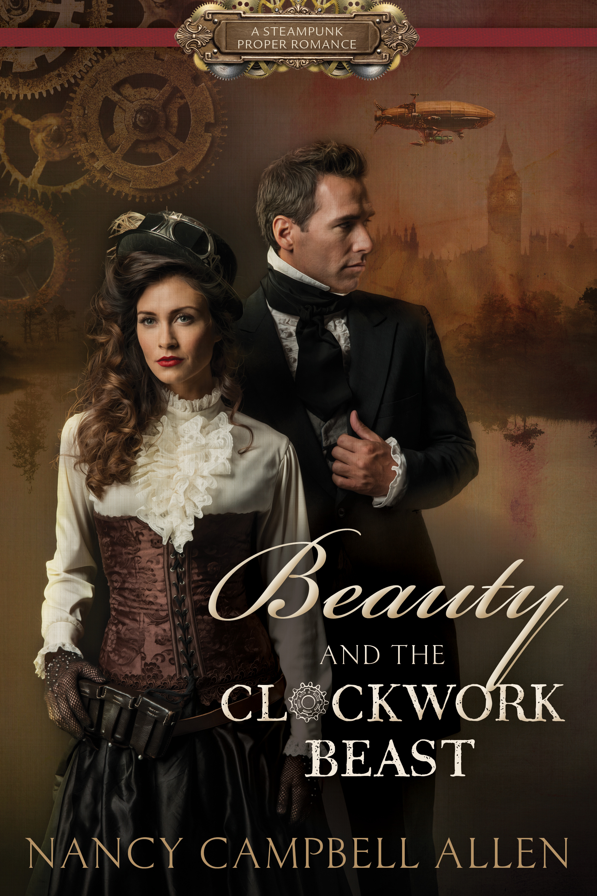
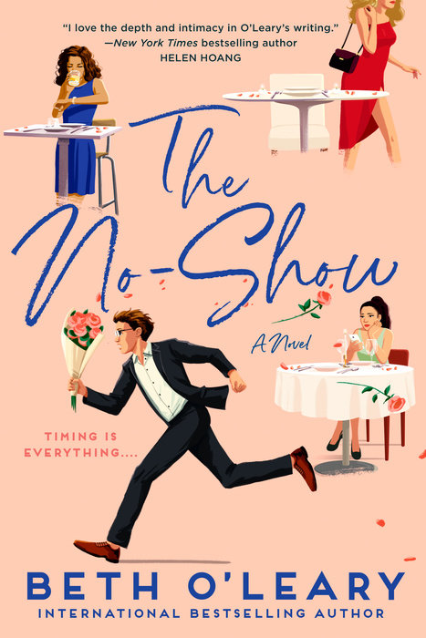
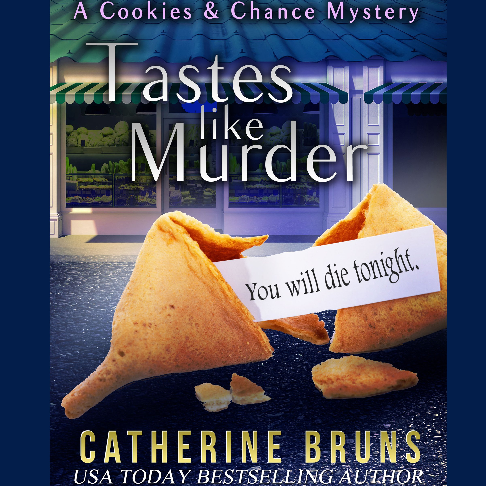

Romeo and Juliet Summary. An age-old vendetta between two powerful families erupts into bloodshed. A group of masked Montagues risk further conflict by gatecrashing a Capulet party. A young lovesick Romeo Montague falls instantly in love with Juliet Capulet, who is due to marry her father's choice, the County Paris.
Cinder
Humans and androids crowd the raucous streets of New Beijing. A deadly plague ravages the population. From space, a ruthless Lunar people watch, waiting to make their move. No one knows that Earth’s fate hinges on one girl. . . . Cinder, a gifted mechanic, is a cyborg.

Beauty and the Clockwork Beast
Jane Eyre meets Beauty and the Beast in this Steampunk Proper Romance
When Lucy Pickett arrives at Blackwell Manor to tend to her ailing cousin, Kate, she finds more than she bargained for. A restless ghost roams the hallways, werewolves have been reported in the area, and vampires lurk across the Scottish border.
Lord Miles himself is clearly hiding a secret. He is brash and inhospitable, and does not take kindly to visitors even one as smart and attractive as Miss Pickett. He is unsettled by the mysterious deaths of his new wife, Clara, and his sister, Marie. Could Miles be to blame for the deaths?
Working together, Miles and Lucy attempt to restore peace to Blackwell Manor. But can Lucy solve the mystery of Miles? Can she love the man beast and all?
Also includes a bonus prequel novelette entitled Marie's Story.

The No-Show
Three women who seemingly have nothing in common find that they're involved with the same man in this smart new rom-com by Beth O'Leary, bestselling author of The Flatshare.

Tastes like Murder
Sally Muccio’s had her crosses to bear: a cheating ex-boyfriend, crazy Italian parents, and an unfaithful husband, just to name a few. After her divorce, she returns to her hometown to start a novelty cookie shop whose specialties include original fortune cookies, served with a sprinkle of foreshadowing. But there’s no warning when her ex-husband’s mistress drops dead on Sal's porch, and police confirm it’s a homicide. Determined to stop her life from becoming a recipe for disaster, Sal takes matters into her own hands. With two very different men vying for her affection, dead bodies piling up, and a reputation hanging by an apron string, Sal finds herself in a race against time to save both her business and life—before the last cookie crumbles.